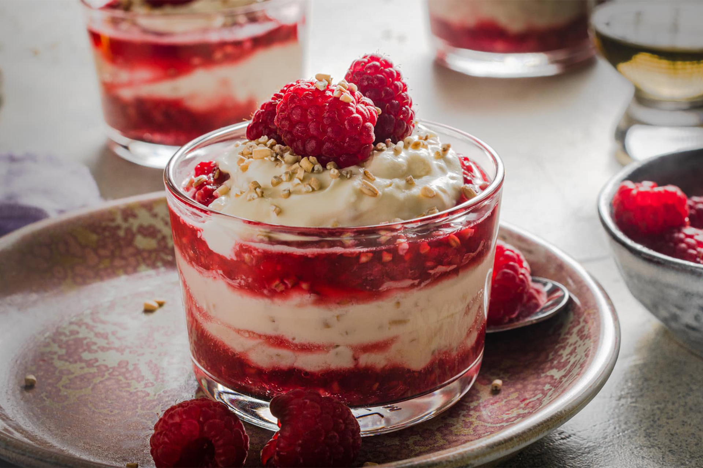

Cranachan

Ingredients
- 3 tablespoons oatmeal
- 1 cup raspberries
- 1 cup heavy whipping cream
- 2 tablespoons honey
- 2 tablespoons Scotch whisky
- Mint leaves, for garnish
Instructions
- Toast the oatmeal in a dry skillet over medium heat until golden brown, stirring often to prevent burning. Remove from heat and let cool.
- In a bowl, lightly crush half of the raspberries with a fork to release their juices.
- In another bowl, whip the heavy whipping cream until soft peaks form. Stir in the honey and whisky.
- Fold in the toasted oatmeal and crushed raspberries, keeping some oatmeal aside for garnish.
- Divide the mixture among serving glasses, layering with the remaining whole raspberries.
- Garnish with a sprinkle of toasted oatmeal and a mint leaf.
Time
- Preparation Time: 15 minutes
- Cooking Time: 5 minutes
- Total Time: 20 minutes
Enjoy your Cranachan!